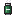
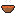
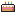

WIKI
WIKI
Food & medical
Every food does something more than filling you up: speed, warmth, strength, protection from bites... Each line tells you what it does and where to find it.
Medical

Heals 6 health, cures scratches and pauses the infection for 45 seconds.
3 scrap Medic · dropped by Linebacker, Riot Cop, Bloater, Santa Bloater, Convict Brute, Mutant Brute, Soldier Brute, The Weeper, The Stalker, Sumo · Distress drop crate 120%, Supply crate 60%

Cures the infection of a bite and gives you a few seconds of regeneration.
6 scrap Armorer, Brawler, Medic, Scavenger · boss loot: Mother Bloater · dropped by The Demolisher, The Lawnmower Man, Angry Chef, The Tank, Hammer Tank · Distress drop crate 60%, Supply crate 30%

Heals you completely, removes poison, slowness and weakness, cures scratches and pushes the infection back.
10 scrap Armorer, Brawler, Medic, Scavenger · boss loot: The Warden · dropped by The Demolisher, The Lawnmower Man, Angry Chef, The Tank, Hammer Tank · Distress drop crate 20%, Supply crate 10%
What each one does to the infection: see Infection.
Food

Open it with a melee weapon first.
2 scrap Grocer, Medic · Broken cupboard 18%, Broken shopping crate 7.3%
Can be eaten even when full.
3 scrap Grocer, Medic · Broken cupboard 12%, Broken shopping crate 7.3%
Then a short sugar crash slows you.
2 scrap Grocer, Medic · Broken fridge 24%, Broken shopping crate 7.3%

Wakes you up and spots zombies for 5 s.
4 scrap Grocer, Medic · Broken shopping crate 4.9%, Cardboard Box 3.9%
Give a slice to an ally to heal it.
6 scrap Grocer, Medic · Broken fridge 7.9%, Broken shopping crate 2.4%

No frost and no slowness while warm.
4 scrap Grocer, Medic · Broken fridge 7.9%, Broken shopping crate 4.9%
Bites cannot infect you for 60 s.
5 scrap Grocer, Medic · Broken fridge 16%, Broken shopping crate 4.9%
Your next melee hit glues a zombie for 2 s.
2 scrap Grocer, Medic · Broken shopping crate 7.3%, Cardboard Box 5.9%

+4 health a slice, may hide a surprise.
8 scrap Grocer, Medic · boss loot: Mega Mascot
Big meal: regeneration and warm for 20 s.
3 scrap Grocer, Medic · Broken cupboard 18%, Broken shopping crate 4.9%
Throw the peel: zombies slip on it (60 s).
2 scrap Grocer, Medic · Broken fridge 24%, Broken shopping crate 7.3%
Crunchy and loud: the zombies hear you.
2 scrap Grocer, Medic · Broken cupboard 12%, Broken shopping crate 4.9%
Your next left click breathes fire.
3 scrap Grocer, Medic · Broken shopping crate 4.9%, Cardboard Box 3.9%
No frost, light regeneration.
4 scrap Grocer, Medic · Broken shopping crate 4.9%, Cardboard Box 3.9%
Your hits are stronger for 30 s.
4 scrap Grocer, Medic · Broken fridge 16%, Broken shopping crate 4.9%
Give one to an ally to heal it.
2 scrap Grocer, Medic · Broken fridge 24%, Broken shopping crate 7.3%
Dropped by the Ice Cream Man.
3 scrap Grocer, Medic · Broken fridge 16%, Broken shopping crate 2.4%
Also clears nausea and dizziness.
3 scrap Grocer, Medic · Broken fridge 16%, Broken shopping crate 4.9%
Beekeepers sometimes drop one.
5 scrap Grocer, Medic · Broken cupboard 5.9%, Broken shopping crate 2.4%
You glow: the Blind hear you.
4 scrap Grocer, Medic · Broken shopping crate 4.9%, Cardboard Box 3.9%